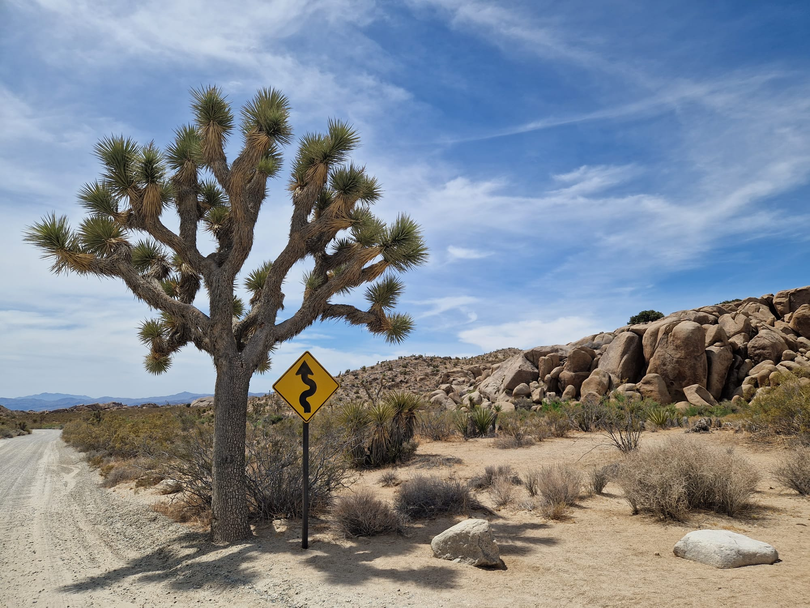
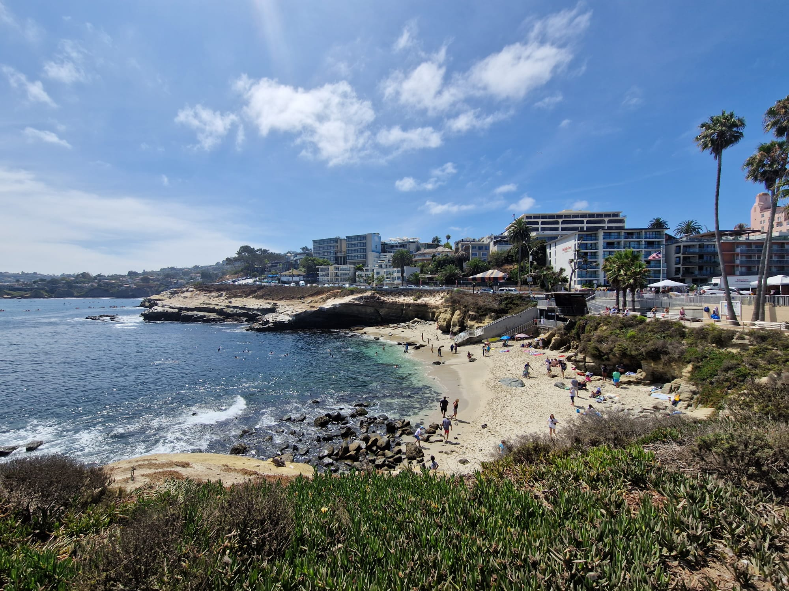
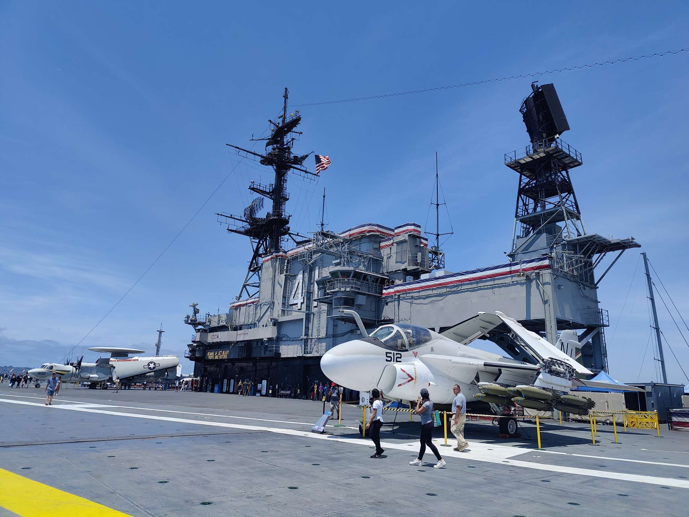
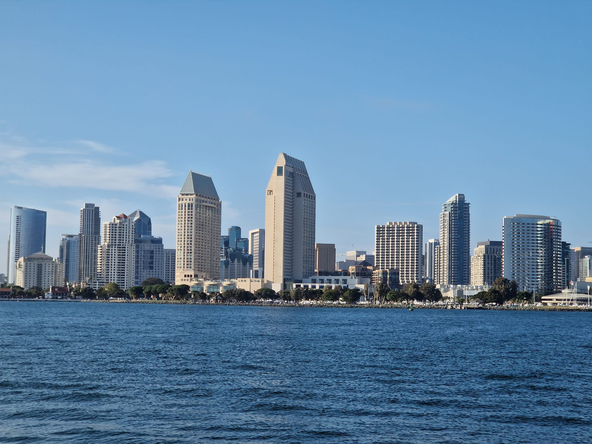
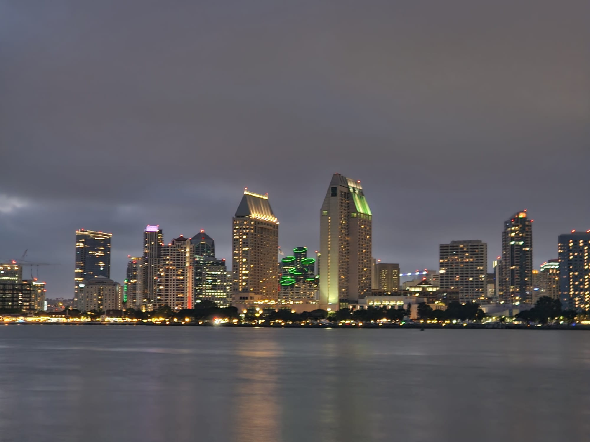

San Diego
Nach einer sehr heissen Nacht (und damit ist selbstverständlich die Temperatur gemeint, nur dass keine Missverständnisse aufkommen) fuhren wir am Morgen sehr früh in Lake Havasu City los in Richtung San Diego. Dabei machten wir noch einen kleinen Umweg durch den Joshua Tree Nationalpark. Ein weiteres Naturspektakel hier in den USA.  Danach fuhren wir ohne grosse Umwege weiter nach San Diego, bzw. genau gesagt nach Pacific Beach. Dies ist etwas nördlich von Downtown San Diego. Zum ersten Mal in unseren Flitterwochen waren wir nun am Meer. Den Abend genossen wir dann in der näheren Umgebung unseres Hotels. Mimi auf jeden Fall war scho ganz aus dem Häusschen, nach 12 Jahren wieder da zu sein, wo sie ihren Sprachaufenthalt absolviert hatte. Am nächsten Morgen gönnten wir uns zuerst ein ausgiebiges Frühstück in einem Restaurant direkt am Strand. Rührei und Pancakes mit Meersicht hat man ja schliesslich nicht alle Tage. Danach fuhren wir zuerst nach La Jolla. Dort zeigte Mimi wo sie damals wohnte, zur Schule ging und ihre Mittagspausen an der La Jolla Cove verbrachte.  Anschliessend fuhren wir nach Downtown San Diego. Genau gesagt in die Hafengegend von San Diego. Zuerst suchten wir vergebens einen Parkplatz. Wie sich herausstellte fand genau an diesen Tagen, an welchen wir in San Diego waren die bekannte "Comic Con" statt, weshalb mehrere Strassen um das Convention Center gesperrt und alle Parkplätze belegt waren. (Nun ist uns auch klar, weshalb die Hotelpreise so wahnsinnig hoch waren) Gerade als wir die ganze Strasse entlanggefahren sind und bei der nächsten Möglichkeit auf einer Parallelstrasse zurück zum Hafen fahren wollten, fuhren wir an einem leeren Parkfeld vorbei. Ohne zu zögern parkten wir unser Fahrzeug. Zu Beginn waren wir dann doch etwas unsicher, denn die Parkplätze direkt am Hafen waren alle kostenpflichtig, während gerade einmal eine Parallelstrasse entfernt, weder eine Parkgebür fällig, noch eine Zeitbegrenzung angegeben war. Konnte das wirklich sein?! Da in den USA falsch parkierte Fahrzeuge nicht unbedingt mit einer Parkbusse bedient, sondern sogleich abgeschleppt werden, fragten wir einen fremden Herrn, welcher gerade aus dem Geschäftsgebäude neben den Parkfeldern heraus kam. Er konnte uns dann aber versichern, dass die Parkfelder tatsächlich gratis und ohne Zeitlimite zur Verfügung stehen. Nun gut, dann hatten wir ja richtig Glück und mussten lediglich noch zum Hafen laufen, wo wir zuerst die USS Midway besuchten. Bei der USS Midway handelt es sich um einen ausgemusterten Flugzeugträger, welcher nun als Museum geführt wird. Natürlich war Mimi bereits vor 12 Jahren einmal hier, jedoch hatte sie so viel davon vergessen, dass es auch für sie nochmals spannend war. Remo wusste sowieso nicht wo er mit schauen anfangen sollte. Während andere Besucher die Flugzeuge auf dem Deck bestaunten, war Remo mehr von der Technik im ganzen Schiff fasziniert.  Nach der Besichtigung dieses sehr imposanten Flugzeugträgers liefen wir noch durch das Seaport Villag bis hin zum Convention Center. Aufgrund der bereits erwähnten Comic Con hatte es in dieser Gegend solch eine grosse Masse an Personen, dass wir dann mittels Gaslamp Quarter und Little Italy zurück zu unserem Fahrzeug liefen. Dort angekommen stellten wir fest.....neiiin keine Sorge, das Fahreug war noch da und es klemmte auch keine Busse unter dem Scheibenwischer😉 Da wir mitlerweilen etwas hungrig waren, fuhren wir nach Coronado Island. Dort bestaunten wir zuerst die Skyline von San Diego, bevor wir unsere hungrigen Bäuche versorgten.  Nach dem Abendessen machten wir noch einen kleinen Spatziergang am Strand entlang (kitschig, schon klar🙈). Als es endlich eindunkelte, holten wir wiederrum unsere Kameras und Mobiltelefone hervor, um die Skyline erneut zu fotografieren.  Am nächsten Tag fuhren wir am Morgen zuerst ins Fashion Valley Shopping Center, um unsere Shoppinglust etwas zu stillen. Danach begaben wir uns zum Old Town San Diego, wobei wir auch hier zuerst während gut 30 Minuten einen Parkplatz suchten. Diesmal hatten wir nicht so viel Glück und fanden lediglich noch einen Parkplatze welcher tatsächlich $12 kostete. Danach genossen wir die Altstadt von San Diego, welche in traditionell mexikanischem Style daherkommt. An unserem letzten Abend waren wir zu einem echten "American BBQ" eingeladen. Dort trafen wir auf Bryant, den Exmann von Mimis Gastmutter, bei welchem das BBQ stattfand, und die beiden ehemaligen Gastgeschwister Zane (damals 12 Jahre alt) und Devi (damals 5 Jahre alt). Nachdem vor 12 Jahren Mimi noch mit Abstand die Grösste war, war sie heute doch deutlich die Kleinste von allen🙈 Natürlich war es absolut toll, alle wieder zu sehen, trotzdem war es auch etwas komisch, weil die Kids in der Zwischenzeit so Erwachsen wurden. Nach dem tollen Wiedersehen hiess es aber erneut Abschied nehmen, denn Morgen geht unsere Reise bereits weiter.